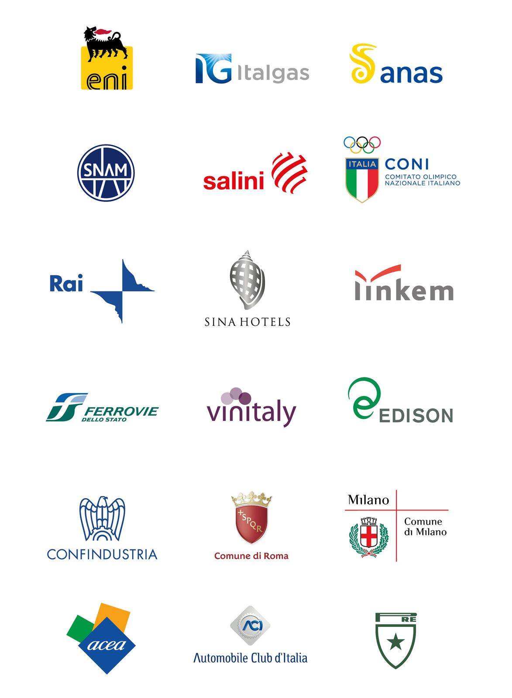

Aziende
Inarea
Inarea Identity and Design Network è una rete internazionale e indipendente di designer, specializzata nella creazione e gestione di sistemi di identità.
Dal 1990, prima come collaboratori interni, poi come designer esterni indipendenti, abbiamo collaborato alla realizzazione di progetti di corporate identity per prestigiose e storiche aziende e istituzioni nazionali.
In particolare abbiamo partecipato alla realizzazione di design explorations, manuali di linee guida per l'utilizzo del marchio, esecutivi per la stampa e per le applicazione digital, programmi di brand management.
Di seguito alcuni progetti dei progetti a cui abbiamo collaborato.
Concept e design firm: Inarea Identity & Design network

